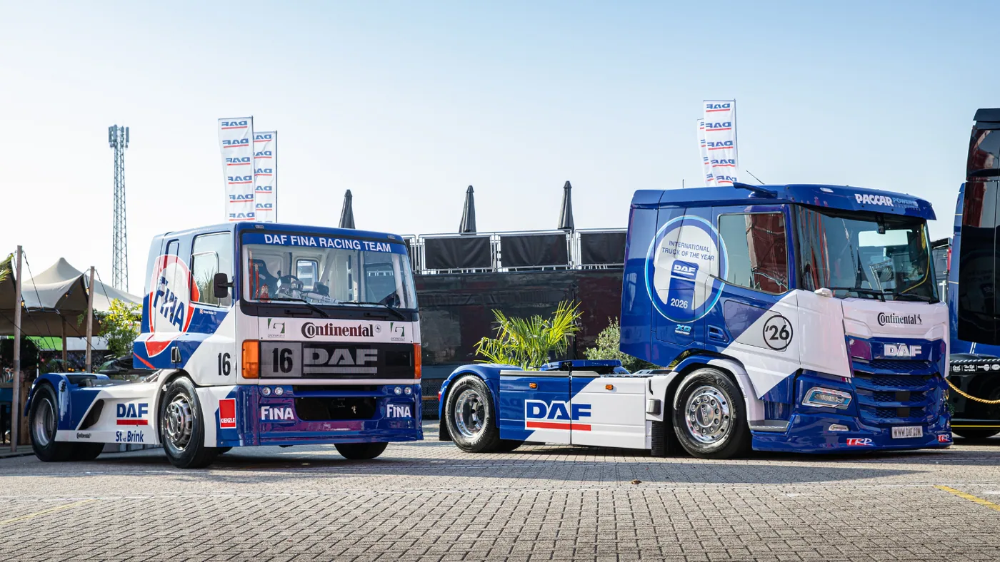

DAF entregó a la empresa neerlandesa Van Der Mierden Transport una unidad XD 350 FT Electric 4x2 destinada a la recolección y el transporte de leche. La noticia fue publicada el 27 de agosto y muestra una aplicación concreta de la electromovilidad más allá de la distribución urbana.
El camión llama la atención por su decoración azul y blanca, inspirada en el DAF de competición de 1996. Debajo de esa identidad visual funciona una tractora eléctrica de serie preparada para trabajar todos los días con una cisterna aislada.
Una aplicación con recorridos previsibles
La recolección de leche suele organizarse mediante rutas definidas entre establecimientos rurales y plantas de procesamiento. Esa repetición permite conocer kilómetros, pendientes, tiempos de espera y regreso a base, información necesaria para planificar un camión eléctrico.
La autonomía anunciada supera los 500 kilómetros en condiciones adecuadas, pero no debe leerse como una cifra fija. Peso, temperatura, velocidad, viento, topografía, calefacción o refrigeración de cabina y equipos auxiliares modifican el consumo.
Una cisterna también cambia su masa durante la ruta a medida que incorpora producto. La planificación debe utilizar el peor escenario de carga y conservar una reserva para desvíos, clima o demoras.
Potencia y batería
El XD Electric utiliza una cadena cinemática de 350 kW, aproximadamente 480 hp, alimentada por un paquete de 525 kWh. La respuesta inmediata del motor eléctrico puede facilitar arranques con carga y tránsito regional sin cambios de marcha convencionales.
La capacidad de batería no equivale directamente a autonomía. Parte de la energía queda protegida por el sistema de gestión para cuidar las celdas. La flota debe medir kWh por kilómetro y no limitarse a observar el porcentaje del tablero.
La carga útil también importa. Las baterías agregan peso, mientras que una ruta láctea busca transportar el mayor volumen posible. El cálculo correcto compara energía, toneladas entregadas, tiempos de ciclo y capacidad legal por eje.

De la competición a una operación silenciosa
El diseño recuerda al DAF Fina Racing Team de los años noventa, pero el contraste mecánico es total. En lugar del ruido de un diésel de competición, la nueva unidad ofrece funcionamiento silencioso y ausencia de emisiones en el escape.
El menor ruido puede ser una ventaja durante la recolección nocturna o temprano por la mañana cerca de viviendas y establecimientos rurales. También mejora el entorno del conductor y del personal que trabaja alrededor de la unidad.
Esto no vuelve silencioso a todo el conjunto: neumáticos, aire, bombas y semirremolque continúan generando sonido. Tampoco elimina emisiones asociadas a la electricidad o fabricación; el balance depende del origen de la energía y la vida útil.
La empresa detrás del proyecto
Van Der Mierden Transport es una empresa familiar con más de sesenta años. Comenzó recogiendo tarros de leche con caballo y carro, y hoy opera una flota moderna compuesta casi totalmente por DAF.
La compañía transporta leche fresca, materias primas, productos intermedios y alimentos terminados dentro y fuera de Países Bajos. Esa experiencia permite comparar el eléctrico con una operación diésel conocida y observar productividad real.
Carga: el punto decisivo
Para aprovechar un vehículo de 525 kWh, la base necesita potencia eléctrica, cargador, protecciones y gestión de horarios. Cargar mientras el camión está detenido por descanso, lavado o espera reduce el impacto sobre la operación.
La potencia máxima del cargador no cuenta toda la historia. También importan la curva de carga, la temperatura de la batería y el porcentaje inicial. Los últimos puntos suelen ingresar más lentamente para proteger las celdas.
Si varias unidades cargan al mismo tiempo, un sistema de gestión debe distribuir potencia y evitar superar la capacidad contratada. La electrificación de una flota comienza muchas veces en el tablero eléctrico antes que en el camión.
Mantenimiento que cambia de foco
- Alta tensión: intervención exclusiva de personal formado, con bloqueo y verificación de ausencia de tensión.
- Refrigeración: controlar circuitos de batería, electrónica y motor, además de bombas y válvulas.
- Frenos: la regeneración reduce uso, pero discos, pastillas, aire y ABS siguen necesitando inspección.
- Neumáticos: vigilar presión y desgaste por el peso y el par inmediato.
- Conectores: revisar daños, humedad y fijación sin manipular componentes energizados.
- Software: registrar actualizaciones, eventos de carga y estado de salud de la batería.
Qué puede aprender una flota argentina
La unidad pertenece al mercado europeo y no representa un lanzamiento confirmado en Argentina. Aun así, deja un método aplicable: comenzar con rutas previsibles, regreso a base y datos de consumo antes de ampliar la inversión.
En nuestro país, distancia, disponibilidad de potencia y costo energético varían mucho entre regiones. Una operación regional cerrada puede ser más viable que larga distancia abierta. El análisis debe incluir infraestructura, respaldo y servicio técnico.
Más que una decoración llamativa
El XD Electric demuestra que una tractora a batería puede asignarse a un trabajo de carga específico y no solamente a una exhibición. La estética celebra la historia de DAF, pero su importancia estará en los datos diarios de autonomía, energía y disponibilidad.
Si la operación cumple el recorrido sin reducir productividad, el proyecto aportará una referencia valiosa para otros transportes regionales con regreso a base. La electromovilidad avanza cuando la tecnología encaja con el ciclo, no cuando se aplica la misma solución a todos.